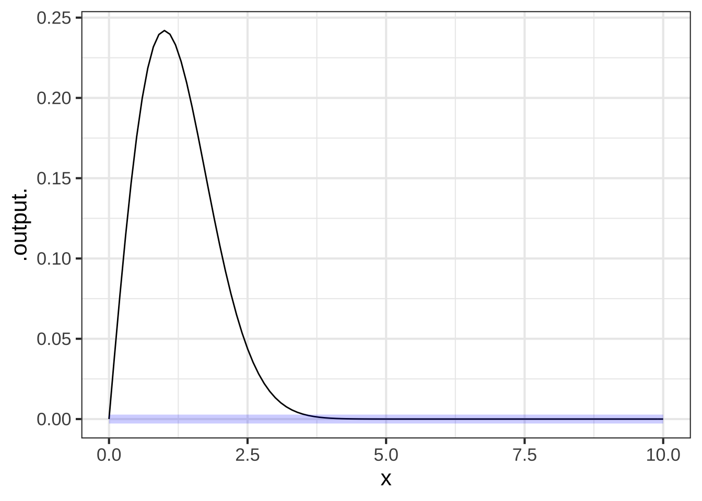
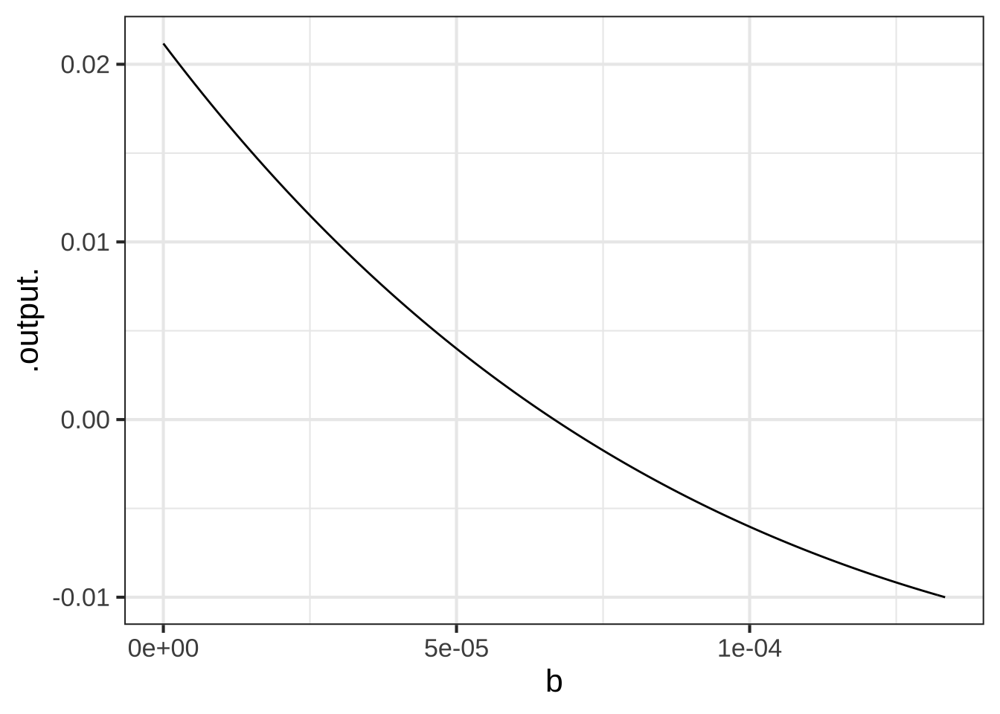
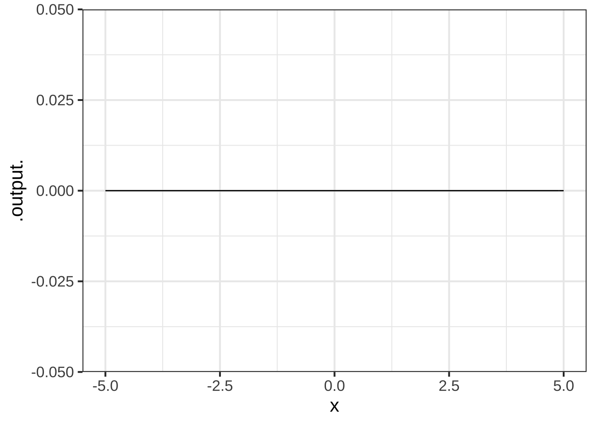

<!DOCTYPE html>
<html lang="" xml:lang="">
<head>

  <meta charset="utf-8" />
  <meta http-equiv="X-UA-Compatible" content="IE=edge" />
  <title>Chapter 27 Change and accumulation | MOSAIC Calculus</title>
  <meta name="description" content="Modeling-based calculus" />
  <meta name="generator" content="bookdown 0.24.1 and GitBook 2.6.7" />

  <meta property="og:title" content="Chapter 27 Change and accumulation | MOSAIC Calculus" />
  <meta property="og:type" content="book" />
  
  
  <meta property="og:description" content="Modeling-based calculus" />
  

  <meta name="twitter:card" content="summary" />
  <meta name="twitter:title" content="Chapter 27 Change and accumulation | MOSAIC Calculus" />
  
  <meta name="twitter:description" content="Modeling-based calculus" />
  

<meta name="author" content="Daniel Kaplan" />


<meta name="date" content="2021-10-15" />

  <meta name="viewport" content="width=device-width, initial-scale=1" />
  <meta name="apple-mobile-web-app-capable" content="yes" />
  <meta name="apple-mobile-web-app-status-bar-style" content="black" />
  
  
<link rel="prev" href="polynomials.html"/>
<link rel="next" href="totaling-bits.html"/>
<script src="libs/header-attrs-2.11/header-attrs.js"></script>
<script src="libs/jquery-3.6.0/jquery-3.6.0.min.js"></script>
<script src="https://cdn.jsdelivr.net/npm/fuse.js@6.4.6/dist/fuse.min.js"></script>
<link href="libs/gitbook-2.6.7/css/style.css" rel="stylesheet" />
<link href="libs/gitbook-2.6.7/css/plugin-table.css" rel="stylesheet" />
<link href="libs/gitbook-2.6.7/css/plugin-bookdown.css" rel="stylesheet" />
<link href="libs/gitbook-2.6.7/css/plugin-highlight.css" rel="stylesheet" />
<link href="libs/gitbook-2.6.7/css/plugin-search.css" rel="stylesheet" />
<link href="libs/gitbook-2.6.7/css/plugin-fontsettings.css" rel="stylesheet" />
<link href="libs/gitbook-2.6.7/css/plugin-clipboard.css" rel="stylesheet" />


<link href="libs/anchor-sections-1.0.1/anchor-sections.css" rel="stylesheet" />
<script src="libs/anchor-sections-1.0.1/anchor-sections.js"></script>
<script src="libs/kePrint-0.0.1/kePrint.js"></script>
<link href="libs/lightable-0.0.1/lightable.css" rel="stylesheet" />
<script src="libs/htmlwidgets-1.5.4/htmlwidgets.js"></script>
<script src="libs/plotly-binding-4.10.0/plotly.js"></script>
<script src="libs/typedarray-0.1/typedarray.min.js"></script>
<link href="libs/crosstalk-1.1.1/css/crosstalk.css" rel="stylesheet" />
<script src="libs/crosstalk-1.1.1/js/crosstalk.min.js"></script>
<link href="libs/plotly-htmlwidgets-css-2.5.1/plotly-htmlwidgets.css" rel="stylesheet" />
<script src="libs/plotly-main-2.5.1/plotly-latest.min.js"></script>
<link href="libs/datatables-css-0.0.0/datatables-crosstalk.css" rel="stylesheet" />
<script src="libs/datatables-binding-0.18/datatables.js"></script>
<link href="libs/dt-core-1.10.20/css/jquery.dataTables.min.css" rel="stylesheet" />
<link href="libs/dt-core-1.10.20/css/jquery.dataTables.extra.css" rel="stylesheet" />
<script src="libs/dt-core-1.10.20/js/jquery.dataTables.min.js"></script>
<span class="math inline">
\(\newcommand{\line}{\text{line}}
\newcommand{\hump}{\text{hump}}
\newcommand{\sigmoid}{\text{sigmoid}}
\newcommand{\recip}{\text{recip}}
\newcommand{\diff}[1]{{\cal D}_#1}
\newcommand{\pnorm}{\text{pnorm}}
\newcommand{\dnorm}{\text{dnorm}}
\newcommand{\CC}[1]{\color{#648fff}{#1}}
\newcommand{\CE}[1]{\color{#785ef0}{#1}}
\newcommand{\CA}[1]{\color{#dc267f}{#1}}
\newcommand{\CB}[1]{\color{#fe6100}{#1}}
\newcommand{\CD}[1]{\color{#ffb000}{#1}}\)
</span>


<style type="text/css">
pre > code.sourceCode { white-space: pre; position: relative; }
pre > code.sourceCode > span { display: inline-block; line-height: 1.25; }
pre > code.sourceCode > span:empty { height: 1.2em; }
.sourceCode { overflow: visible; }
code.sourceCode > span { color: inherit; text-decoration: inherit; }
pre.sourceCode { margin: 0; }
@media screen {
div.sourceCode { overflow: auto; }
}
@media print {
pre > code.sourceCode { white-space: pre-wrap; }
pre > code.sourceCode > span { text-indent: -5em; padding-left: 5em; }
}
pre.numberSource code
  { counter-reset: source-line 0; }
pre.numberSource code > span
  { position: relative; left: -4em; counter-increment: source-line; }
pre.numberSource code > span > a:first-child::before
  { content: counter(source-line);
    position: relative; left: -1em; text-align: right; vertical-align: baseline;
    border: none; display: inline-block;
    -webkit-touch-callout: none; -webkit-user-select: none;
    -khtml-user-select: none; -moz-user-select: none;
    -ms-user-select: none; user-select: none;
    padding: 0 4px; width: 4em;
    color: #aaaaaa;
  }
pre.numberSource { margin-left: 3em; border-left: 1px solid #aaaaaa;  padding-left: 4px; }
div.sourceCode
  {   }
@media screen {
pre > code.sourceCode > span > a:first-child::before { text-decoration: underline; }
}
code span.al { color: #ff0000; font-weight: bold; } /* Alert */
code span.an { color: #60a0b0; font-weight: bold; font-style: italic; } /* Annotation */
code span.at { color: #7d9029; } /* Attribute */
code span.bn { color: #40a070; } /* BaseN */
code span.bu { } /* BuiltIn */
code span.cf { color: #007020; font-weight: bold; } /* ControlFlow */
code span.ch { color: #4070a0; } /* Char */
code span.cn { color: #880000; } /* Constant */
code span.co { color: #60a0b0; font-style: italic; } /* Comment */
code span.cv { color: #60a0b0; font-weight: bold; font-style: italic; } /* CommentVar */
code span.do { color: #ba2121; font-style: italic; } /* Documentation */
code span.dt { color: #902000; } /* DataType */
code span.dv { color: #40a070; } /* DecVal */
code span.er { color: #ff0000; font-weight: bold; } /* Error */
code span.ex { } /* Extension */
code span.fl { color: #40a070; } /* Float */
code span.fu { color: #06287e; } /* Function */
code span.im { } /* Import */
code span.in { color: #60a0b0; font-weight: bold; font-style: italic; } /* Information */
code span.kw { color: #007020; font-weight: bold; } /* Keyword */
code span.op { color: #666666; } /* Operator */
code span.ot { color: #007020; } /* Other */
code span.pp { color: #bc7a00; } /* Preprocessor */
code span.sc { color: #4070a0; } /* SpecialChar */
code span.ss { color: #bb6688; } /* SpecialString */
code span.st { color: #4070a0; } /* String */
code span.va { color: #19177c; } /* Variable */
code span.vs { color: #4070a0; } /* VerbatimString */
code span.wa { color: #60a0b0; font-weight: bold; font-style: italic; } /* Warning */
</style>


<link rel="stylesheet" href="CalcZ-style.css" type="text/css" />
</head>

<body>


  <div class="book without-animation with-summary font-size-2 font-family-1" data-basepath=".">

    <div class="book-summary">
      <nav role="navigation">

<ul class="summary">
<li><strong><a href="./">CalcZ</a></strong></li>

<li class="divider"></li>
<li class="chapter" data-level="" data-path="welcome-to-calculus.html"><a href="welcome-to-calculus.html"><i class="fa fa-check"></i>Welcome to calculus</a>
<ul>
<li class="chapter" data-level="" data-path="welcome-to-calculus.html"><a href="welcome-to-calculus.html#computing-and-apps"><i class="fa fa-check"></i>Computing and apps</a></li>
<li class="chapter" data-level="" data-path="welcome-to-calculus.html"><a href="welcome-to-calculus.html#exercises-and-feedback"><i class="fa fa-check"></i>Exercises and feedback</a></li>
<li class="chapter" data-level="" data-path="welcome-to-calculus.html"><a href="welcome-to-calculus.html#practice-practice-practice"><i class="fa fa-check"></i>Practice, practice, practice</a></li>
<li class="chapter" data-level="" data-path="welcome-to-calculus.html"><a href="welcome-to-calculus.html#software-for-the-course"><i class="fa fa-check"></i>Software for the course</a></li>
</ul></li>
<li class="part"><span><b>I Block 1: Functions and quantity</b></span></li>
<li class="chapter" data-level="1" data-path="change.html"><a href="change.html"><i class="fa fa-check"></i><b>1</b> Change</a>
<ul>
<li class="chapter" data-level="1.1" data-path="change.html"><a href="change.html#quantity-vs-number"><i class="fa fa-check"></i><b>1.1</b> Quantity vs number</a></li>
<li class="chapter" data-level="1.2" data-path="change.html"><a href="change.html#functions"><i class="fa fa-check"></i><b>1.2</b> Functions</a></li>
<li class="chapter" data-level="1.3" data-path="change.html"><a href="change.html#fundamental-model-of-change"><i class="fa fa-check"></i><b>1.3</b> Fundamental model of change</a></li>
<li class="chapter" data-level="1.4" data-path="change.html"><a href="change.html#exercises"><i class="fa fa-check"></i><b>1.4</b> Exercises</a></li>
</ul></li>
<li class="chapter" data-level="2" data-path="pattern-book.html"><a href="pattern-book.html"><i class="fa fa-check"></i><b>2</b> Functions for modeling</a>
<ul>
<li class="chapter" data-level="2.1" data-path="pattern-book.html"><a href="pattern-book.html#pattern-book-functions"><i class="fa fa-check"></i><b>2.1</b> Pattern-book functions</a></li>
<li class="chapter" data-level="2.2" data-path="pattern-book.html"><a href="pattern-book.html#the-power-law-family"><i class="fa fa-check"></i><b>2.2</b> The power-law family</a></li>
<li class="chapter" data-level="2.3" data-path="pattern-book.html"><a href="pattern-book.html#constructing-functions"><i class="fa fa-check"></i><b>2.3</b> Constructing functions</a></li>
<li class="chapter" data-level="2.4" data-path="pattern-book.html"><a href="pattern-book.html#function-shapes"><i class="fa fa-check"></i><b>2.4</b> Function shapes</a></li>
<li class="chapter" data-level="2.5" data-path="pattern-book.html"><a href="pattern-book.html#exercises-1"><i class="fa fa-check"></i><b>2.5</b> Exercises</a></li>
</ul></li>
<li class="chapter" data-level="3" data-path="structure-of-a-function.html"><a href="structure-of-a-function.html"><i class="fa fa-check"></i><b>3</b> Structure of a function</a>
<ul>
<li class="chapter" data-level="3.1" data-path="structure-of-a-function.html"><a href="structure-of-a-function.html#inputs-to-output"><i class="fa fa-check"></i><b>3.1</b> Inputs to output</a></li>
<li class="chapter" data-level="3.2" data-path="structure-of-a-function.html"><a href="structure-of-a-function.html#bureaucratic"><i class="fa fa-check"></i><b>3.2</b> A bureaucratic analogy</a></li>
<li class="chapter" data-level="3.3" data-path="structure-of-a-function.html"><a href="structure-of-a-function.html#domain-input-space"><i class="fa fa-check"></i><b>3.3</b> Domain: input space</a></li>
<li class="chapter" data-level="3.4" data-path="structure-of-a-function.html"><a href="structure-of-a-function.html#range-output-space"><i class="fa fa-check"></i><b>3.4</b> Range: output space</a></li>
<li class="chapter" data-level="3.5" data-path="structure-of-a-function.html"><a href="structure-of-a-function.html#formulas-in-r"><i class="fa fa-check"></i><b>3.5</b> Formulas in R</a></li>
<li class="chapter" data-level="3.6" data-path="structure-of-a-function.html"><a href="structure-of-a-function.html#exercises-2"><i class="fa fa-check"></i><b>3.6</b> Exercises</a></li>
</ul></li>
<li class="chapter" data-level="4" data-path="fun-describing.html"><a href="fun-describing.html"><i class="fa fa-check"></i><b>4</b> Describing functions</a>
<ul>
<li class="chapter" data-level="4.1" data-path="fun-describing.html"><a href="fun-describing.html#slice-plot-intro"><i class="fa fa-check"></i><b>4.1</b> Graphing a function</a></li>
<li class="chapter" data-level="4.2" data-path="fun-describing.html"><a href="fun-describing.html#tables-of-inputs-and-outputs"><i class="fa fa-check"></i><b>4.2</b> Tables of inputs and outputs</a></li>
<li class="chapter" data-level="4.3" data-path="fun-describing.html"><a href="fun-describing.html#word-descriptions"><i class="fa fa-check"></i><b>4.3</b> Word descriptions</a>
<ul>
<li class="chapter" data-level="4.3.1" data-path="fun-describing.html"><a href="fun-describing.html#concavity"><i class="fa fa-check"></i><b>4.3.1</b> Concavity</a></li>
<li class="chapter" data-level="4.3.2" data-path="fun-describing.html"><a href="fun-describing.html#continuity-intro"><i class="fa fa-check"></i><b>4.3.2</b> Continuity</a></li>
<li class="chapter" data-level="4.3.3" data-path="fun-describing.html"><a href="fun-describing.html#monotonicity"><i class="fa fa-check"></i><b>4.3.3</b> Monotonicity</a></li>
<li class="chapter" data-level="4.3.4" data-path="fun-describing.html"><a href="fun-describing.html#periodicity"><i class="fa fa-check"></i><b>4.3.4</b> Periodicity</a></li>
<li class="chapter" data-level="4.3.5" data-path="fun-describing.html"><a href="fun-describing.html#asymptotic-behavior"><i class="fa fa-check"></i><b>4.3.5</b> Asymptotic behavior</a></li>
<li class="chapter" data-level="4.3.6" data-path="fun-describing.html"><a href="fun-describing.html#local-extremes"><i class="fa fa-check"></i><b>4.3.6</b> Locally extreme points</a></li>
</ul></li>
<li class="chapter" data-level="4.4" data-path="fun-describing.html"><a href="fun-describing.html#computer-function-names"><i class="fa fa-check"></i><b>4.4</b> Computer function names</a></li>
<li class="chapter" data-level="4.5" data-path="fun-describing.html"><a href="fun-describing.html#mathematical-notation"><i class="fa fa-check"></i><b>4.5</b> Mathematical notation</a></li>
<li class="chapter" data-level="4.6" data-path="fun-describing.html"><a href="fun-describing.html#exercises-3"><i class="fa fa-check"></i><b>4.6</b> Exercises</a></li>
</ul></li>
<li class="chapter" data-level="5" data-path="fun-notation.html"><a href="fun-notation.html"><i class="fa fa-check"></i><b>5</b> Notation for functions</a>
<ul>
<li class="chapter" data-level="5.1" data-path="fun-notation.html"><a href="fun-notation.html#a-notation-for-computing"><i class="fa fa-check"></i><b>5.1</b> A notation for computing</a></li>
<li class="chapter" data-level="5.2" data-path="fun-notation.html"><a href="fun-notation.html#words-for-using-functions"><i class="fa fa-check"></i><b>5.2</b> Words for using functions</a></li>
<li class="chapter" data-level="5.3" data-path="fun-notation.html"><a href="fun-notation.html#algorithms"><i class="fa fa-check"></i><b>5.3</b> Formulas and algorithms</a></li>
<li class="chapter" data-level="5.4" data-path="fun-notation.html"><a href="fun-notation.html#algorithms-without-formulas"><i class="fa fa-check"></i><b>5.4</b> Algorithms without formulas</a></li>
<li class="chapter" data-level="5.5" data-path="fun-notation.html"><a href="fun-notation.html#computer-notation"><i class="fa fa-check"></i><b>5.5</b> Computer notation</a></li>
<li class="chapter" data-level="5.6" data-path="fun-notation.html"><a href="fun-notation.html#calcz-naming-conventions"><i class="fa fa-check"></i><b>5.6</b> CalcZ naming conventions</a></li>
<li class="chapter" data-level="5.7" data-path="fun-notation.html"><a href="fun-notation.html#functions-in-r"><i class="fa fa-check"></i><b>5.7</b> Functions in R</a></li>
<li class="chapter" data-level="5.8" data-path="fun-notation.html"><a href="fun-notation.html#foursigns"><i class="fa fa-check"></i><b>5.8</b> <span class="math inline">\(=\)</span>, <span class="math inline">\(\equiv\)</span>, <span class="math inline">\(\rightarrow\)</span>, <code>&lt;-</code></a></li>
<li class="chapter" data-level="5.9" data-path="fun-notation.html"><a href="fun-notation.html#exercises-4"><i class="fa fa-check"></i><b>5.9</b> Exercises</a></li>
</ul></li>
<li class="chapter" data-level="6" data-path="graphs-and-graphics.html"><a href="graphs-and-graphics.html"><i class="fa fa-check"></i><b>6</b> Graphics &amp; function graphs</a>
<ul>
<li class="chapter" data-level="6.1" data-path="graphs-and-graphics.html"><a href="graphs-and-graphics.html#the-graphics-frame"><i class="fa fa-check"></i><b>6.1</b> The graphics frame</a></li>
<li class="chapter" data-level="6.2" data-path="graphs-and-graphics.html"><a href="graphs-and-graphics.html#data-graphics-the-point-plot"><i class="fa fa-check"></i><b>6.2</b> Data graphics: the point plot</a></li>
<li class="chapter" data-level="6.3" data-path="graphs-and-graphics.html"><a href="graphs-and-graphics.html#function-graphs"><i class="fa fa-check"></i><b>6.3</b> Function graphs</a></li>
<li class="chapter" data-level="6.4" data-path="graphs-and-graphics.html"><a href="graphs-and-graphics.html#graphics-layers"><i class="fa fa-check"></i><b>6.4</b> Graphics layers</a></li>
<li class="chapter" data-level="6.5" data-path="graphs-and-graphics.html"><a href="graphs-and-graphics.html#data-and-functions"><i class="fa fa-check"></i><b>6.5</b> Data and functions</a></li>
<li class="chapter" data-level="6.6" data-path="graphs-and-graphics.html"><a href="graphs-and-graphics.html#inputs-to-output-1"><i class="fa fa-check"></i><b>6.6</b> Inputs to output</a></li>
<li class="chapter" data-level="6.7" data-path="graphs-and-graphics.html"><a href="graphs-and-graphics.html#outputs-to-inputs"><i class="fa fa-check"></i><b>6.7</b> Outputs to inputs</a></li>
<li class="chapter" data-level="6.8" data-path="graphs-and-graphics.html"><a href="graphs-and-graphics.html#surface-plot"><i class="fa fa-check"></i><b>6.8</b> Graphs of functions with two inputs</a></li>
<li class="chapter" data-level="6.9" data-path="graphs-and-graphics.html"><a href="graphs-and-graphics.html#contour-plots"><i class="fa fa-check"></i><b>6.9</b> Contour plots</a></li>
<li class="chapter" data-level="6.10" data-path="graphs-and-graphics.html"><a href="graphs-and-graphics.html#slice-plots"><i class="fa fa-check"></i><b>6.10</b> Slice plots</a></li>
<li class="chapter" data-level="6.11" data-path="graphs-and-graphics.html"><a href="graphs-and-graphics.html#exercises-5"><i class="fa fa-check"></i><b>6.11</b> Exercises</a></li>
</ul></li>
<li class="chapter" data-level="7" data-path="params-intro.html"><a href="params-intro.html"><i class="fa fa-check"></i><b>7</b> Parameters for functions</a>
<ul>
<li class="chapter" data-level="7.1" data-path="params-intro.html"><a href="params-intro.html#parallel-scales"><i class="fa fa-check"></i><b>7.1</b> Parallel scales</a></li>
<li class="chapter" data-level="7.2" data-path="params-intro.html"><a href="params-intro.html#scaling-the-input"><i class="fa fa-check"></i><b>7.2</b> Scaling the input</a></li>
<li class="chapter" data-level="7.3" data-path="params-intro.html"><a href="params-intro.html#scale-the-output"><i class="fa fa-check"></i><b>7.3</b> Scale the output</a></li>
<li class="chapter" data-level="7.4" data-path="params-intro.html"><a href="params-intro.html#linear-combinations"><i class="fa fa-check"></i><b>7.4</b> Linear combinations</a></li>
<li class="chapter" data-level="7.5" data-path="params-intro.html"><a href="params-intro.html#exercises-6"><i class="fa fa-check"></i><b>7.5</b> Exercises</a></li>
</ul></li>
<li class="chapter" data-level="8" data-path="process-of-modeling.html"><a href="process-of-modeling.html"><i class="fa fa-check"></i><b>8</b> Finding parameters for the basic modeling functions</a>
<ul>
<li class="chapter" data-level="8.1" data-path="process-of-modeling.html"><a href="process-of-modeling.html#variations-from-scaling"><i class="fa fa-check"></i><b>8.1</b> Variations from scaling</a></li>
<li class="chapter" data-level="8.2" data-path="process-of-modeling.html"><a href="process-of-modeling.html#fit-periodic"><i class="fa fa-check"></i><b>8.2</b> Curve fitting a periodic function</a></li>
<li class="chapter" data-level="8.3" data-path="process-of-modeling.html"><a href="process-of-modeling.html#fit-exponential"><i class="fa fa-check"></i><b>8.3</b> Curve fitting an exponential function</a></li>
<li class="chapter" data-level="8.4" data-path="process-of-modeling.html"><a href="process-of-modeling.html#curve-fitting-a-power-law-function"><i class="fa fa-check"></i><b>8.4</b> Curve fitting a power-law function</a></li>
<li class="chapter" data-level="8.5" data-path="process-of-modeling.html"><a href="process-of-modeling.html#gaussian-and-sigmoid-functions"><i class="fa fa-check"></i><b>8.5</b> Gaussian and sigmoid functions</a></li>
<li class="chapter" data-level="8.6" data-path="process-of-modeling.html"><a href="process-of-modeling.html#exercises-7"><i class="fa fa-check"></i><b>8.6</b> Exercises</a></li>
</ul></li>
<li class="chapter" data-level="9" data-path="fun-slopes.html"><a href="fun-slopes.html"><i class="fa fa-check"></i><b>9</b> Slope function</a>
<ul>
<li class="chapter" data-level="9.1" data-path="fun-slopes.html"><a href="fun-slopes.html#change-and-slope"><i class="fa fa-check"></i><b>9.1</b> Change and slope</a></li>
<li class="chapter" data-level="9.2" data-path="fun-slopes.html"><a href="fun-slopes.html#continuous-change"><i class="fa fa-check"></i><b>9.2</b> Continuous change</a></li>
<li class="chapter" data-level="9.3" data-path="fun-slopes.html"><a href="fun-slopes.html#slope"><i class="fa fa-check"></i><b>9.3</b> Slope</a></li>
<li class="chapter" data-level="9.4" data-path="fun-slopes.html"><a href="fun-slopes.html#the-fitted-line"><i class="fa fa-check"></i><b>9.4</b> The fitted line</a></li>
<li class="chapter" data-level="9.5" data-path="fun-slopes.html"><a href="fun-slopes.html#average-rate-of-change"><i class="fa fa-check"></i><b>9.5</b> Average rate of change</a></li>
<li class="chapter" data-level="9.6" data-path="fun-slopes.html"><a href="fun-slopes.html#instantaneous-rate-of-change"><i class="fa fa-check"></i><b>9.6</b> Instantaneous rate of change</a></li>
<li class="chapter" data-level="9.7" data-path="fun-slopes.html"><a href="fun-slopes.html#exercises-8"><i class="fa fa-check"></i><b>9.7</b> Exercises</a></li>
</ul></li>
<li class="chapter" data-level="10" data-path="function-inverses-and-solving.html"><a href="function-inverses-and-solving.html"><i class="fa fa-check"></i><b>10</b> Function inverses and “solving”</a>
<ul>
<li class="chapter" data-level="10.1" data-path="function-inverses-and-solving.html"><a href="function-inverses-and-solving.html#function-inverses"><i class="fa fa-check"></i><b>10.1</b> Function inverses</a></li>
<li class="chapter" data-level="10.2" data-path="function-inverses-and-solving.html"><a href="function-inverses-and-solving.html#solving-graphically"><i class="fa fa-check"></i><b>10.2</b> Solving graphically</a></li>
<li class="chapter" data-level="10.3" data-path="function-inverses-and-solving.html"><a href="function-inverses-and-solving.html#zero-finding"><i class="fa fa-check"></i><b>10.3</b> Zero-finding</a></li>
<li class="chapter" data-level="10.4" data-path="function-inverses-and-solving.html"><a href="function-inverses-and-solving.html#exercises-9"><i class="fa fa-check"></i><b>10.4</b> Exercises</a></li>
</ul></li>
<li class="chapter" data-level="11" data-path="fun-assembling.html"><a href="fun-assembling.html"><i class="fa fa-check"></i><b>11</b> Assembling functions</a>
<ul>
<li class="chapter" data-level="11.1" data-path="fun-assembling.html"><a href="fun-assembling.html#linear-combination"><i class="fa fa-check"></i><b>11.1</b> Linear combination</a></li>
<li class="chapter" data-level="11.2" data-path="fun-assembling.html"><a href="fun-assembling.html#function-composition"><i class="fa fa-check"></i><b>11.2</b> Function composition</a></li>
<li class="chapter" data-level="11.3" data-path="fun-assembling.html"><a href="fun-assembling.html#modeling-polynomial-1"><i class="fa fa-check"></i><b>11.3</b> The modeling polynomial</a></li>
<li class="chapter" data-level="11.4" data-path="fun-assembling.html"><a href="fun-assembling.html#function-multiplication"><i class="fa fa-check"></i><b>11.4</b> Function multiplication</a></li>
<li class="chapter" data-level="11.5" data-path="fun-assembling.html"><a href="fun-assembling.html#all-together-now"><i class="fa fa-check"></i><b>11.5</b> All together now!</a></li>
<li class="chapter" data-level="11.6" data-path="fun-assembling.html"><a href="fun-assembling.html#exercises-10"><i class="fa fa-check"></i><b>11.6</b> Exercises</a></li>
</ul></li>
<li class="chapter" data-level="12" data-path="fun-multiple-inputs.html"><a href="fun-multiple-inputs.html"><i class="fa fa-check"></i><b>12</b> Functions with multiple inputs</a>
<ul>
<li class="chapter" data-level="12.1" data-path="fun-multiple-inputs.html"><a href="fun-multiple-inputs.html#fx-times-gt"><i class="fa fa-check"></i><b>12.1</b> f(x) times g(t)</a></li>
<li class="chapter" data-level="12.2" data-path="fun-multiple-inputs.html"><a href="fun-multiple-inputs.html#two-variable-modeling-polynomial"><i class="fa fa-check"></i><b>12.2</b> Two-variable modeling polynomial</a></li>
<li class="chapter" data-level="12.3" data-path="fun-multiple-inputs.html"><a href="fun-multiple-inputs.html#exercises-11"><i class="fa fa-check"></i><b>12.3</b> Exercises</a></li>
</ul></li>
<li class="chapter" data-level="13" data-path="fun-piecewise.html"><a href="fun-piecewise.html"><i class="fa fa-check"></i><b>13</b> Piecewise functions</a>
<ul>
<li class="chapter" data-level="13.1" data-path="fun-piecewise.html"><a href="fun-piecewise.html#splitting-the-domain"><i class="fa fa-check"></i><b>13.1</b> Splitting the domain</a></li>
<li class="chapter" data-level="13.2" data-path="fun-piecewise.html"><a href="fun-piecewise.html#basic-piecewise-functions"><i class="fa fa-check"></i><b>13.2</b> Basic piecewise functions</a></li>
<li class="chapter" data-level="13.3" data-path="fun-piecewise.html"><a href="fun-piecewise.html#exercises-12"><i class="fa fa-check"></i><b>13.3</b> Exercises</a></li>
</ul></li>
<li class="chapter" data-level="14" data-path="modeling-cycle.html"><a href="modeling-cycle.html"><i class="fa fa-check"></i><b>14</b> Modeling cycle</a>
<ul>
<li class="chapter" data-level="14.1" data-path="modeling-cycle.html"><a href="modeling-cycle.html#example-cooling-water"><i class="fa fa-check"></i><b>14.1</b> Example: Cooling water</a></li>
<li class="chapter" data-level="14.2" data-path="modeling-cycle.html"><a href="modeling-cycle.html#example-the-tides"><i class="fa fa-check"></i><b>14.2</b> Example: The tides</a></li>
<li class="chapter" data-level="14.3" data-path="modeling-cycle.html"><a href="modeling-cycle.html#modeling-project"><i class="fa fa-check"></i><b>14.3</b> Modeling project</a></li>
</ul></li>
<li class="chapter" data-level="15" data-path="magnitudes.html"><a href="magnitudes.html"><i class="fa fa-check"></i><b>15</b> Magnitudes</a>
<ul>
<li class="chapter" data-level="15.1" data-path="magnitudes.html"><a href="magnitudes.html#counting-digits"><i class="fa fa-check"></i><b>15.1</b> Counting digits</a></li>
<li class="chapter" data-level="15.2" data-path="magnitudes.html"><a href="magnitudes.html#using-digit-to-understand-magnitude"><i class="fa fa-check"></i><b>15.2</b> Using digit() to understand magnitude</a></li>
<li class="chapter" data-level="15.3" data-path="magnitudes.html"><a href="magnitudes.html#quantity-and-magnitude"><i class="fa fa-check"></i><b>15.3</b> Quantity and magnitude</a></li>
<li class="chapter" data-level="15.4" data-path="magnitudes.html"><a href="magnitudes.html#composing-ln"><i class="fa fa-check"></i><b>15.4</b> Composing <span class="math inline">\(\ln()\)</span></a></li>
<li class="chapter" data-level="15.5" data-path="magnitudes.html"><a href="magnitudes.html#magnitude-graphics"><i class="fa fa-check"></i><b>15.5</b> Magnitude graphics</a></li>
<li class="chapter" data-level="15.6" data-path="magnitudes.html"><a href="magnitudes.html#reading-log-axes"><i class="fa fa-check"></i><b>15.6</b> Reading logarithmic scales</a></li>
<li class="chapter" data-level="15.7" data-path="magnitudes.html"><a href="magnitudes.html#fractional-digits"><i class="fa fa-check"></i><b>15.7</b> Fractional digits (optional)</a></li>
<li class="chapter" data-level="15.8" data-path="magnitudes.html"><a href="magnitudes.html#exercises-13"><i class="fa fa-check"></i><b>15.8</b> Exercises</a></li>
</ul></li>
<li class="chapter" data-level="16" data-path="dimensions.html"><a href="dimensions.html"><i class="fa fa-check"></i><b>16</b> Dimensions</a>
<ul>
<li class="chapter" data-level="16.1" data-path="dimensions.html"><a href="dimensions.html#mathematics-of-quantity"><i class="fa fa-check"></i><b>16.1</b> Mathematics of quantity</a></li>
<li class="chapter" data-level="16.2" data-path="dimensions.html"><a href="dimensions.html#compound-dimensions"><i class="fa fa-check"></i><b>16.2</b> Compound dimensions</a></li>
<li class="chapter" data-level="16.3" data-path="dimensions.html"><a href="dimensions.html#arithmetic-with-dimensions"><i class="fa fa-check"></i><b>16.3</b> Arithmetic with dimensions</a></li>
<li class="chapter" data-level="16.4" data-path="dimensions.html"><a href="dimensions.html#pendulum-dimensions"><i class="fa fa-check"></i><b>16.4</b> Example: Dimensional analysis</a></li>
<li class="chapter" data-level="16.5" data-path="dimensions.html"><a href="dimensions.html#conversion-flavors-of-1"><i class="fa fa-check"></i><b>16.5</b> Conversion: Flavors of 1</a></li>
<li class="chapter" data-level="16.6" data-path="dimensions.html"><a href="dimensions.html#dimensions-and-linear-combinations"><i class="fa fa-check"></i><b>16.6</b> Dimensions and linear combinations</a></li>
<li class="chapter" data-level="16.7" data-path="dimensions.html"><a href="dimensions.html#exercises-14"><i class="fa fa-check"></i><b>16.7</b> Exercises</a></li>
</ul></li>
<li class="chapter" data-level="" data-path="projects-and-review.html"><a href="projects-and-review.html"><i class="fa fa-check"></i>Projects and review</a>
<ul>
<li class="chapter" data-level="16.8" data-path="projects-and-review.html"><a href="projects-and-review.html#ebola-in-guinea-part-i"><i class="fa fa-check"></i><b>16.8</b> Ebola in Guinea, part I</a>
<ul>
<li class="chapter" data-level="16.8.1" data-path="projects-and-review.html"><a href="projects-and-review.html#data"><i class="fa fa-check"></i><b>16.8.1</b> Data</a></li>
<li class="chapter" data-level="16.8.2" data-path="projects-and-review.html"><a href="projects-and-review.html#exploring-the-data"><i class="fa fa-check"></i><b>16.8.2</b> Exploring the Data</a></li>
<li class="chapter" data-level="16.8.3" data-path="projects-and-review.html"><a href="projects-and-review.html#data-wrangling"><i class="fa fa-check"></i><b>16.8.3</b> Data Wrangling</a></li>
</ul></li>
<li class="chapter" data-level="16.9" data-path="projects-and-review.html"><a href="projects-and-review.html#analysis-of-the-outbreak"><i class="fa fa-check"></i><b>16.9</b> Analysis of the outbreak</a></li>
<li class="chapter" data-level="16.10" data-path="projects-and-review.html"><a href="projects-and-review.html#more-data-smoothing"><i class="fa fa-check"></i><b>16.10</b> More data smoothing</a></li>
<li class="chapter" data-level="16.11" data-path="projects-and-review.html"><a href="projects-and-review.html#final-thoughts"><i class="fa fa-check"></i><b>16.11</b> Final thoughts</a></li>
</ul></li>
<li class="part"><span><b>II Block 2: Differentiation</b></span></li>
<li class="chapter" data-level="" data-path="prolog-differentiation-and-birth.html"><a href="prolog-differentiation-and-birth.html"><i class="fa fa-check"></i>Prolog: Differentiation and birth</a></li>
<li class="chapter" data-level="17" data-path="change-relationships.html"><a href="change-relationships.html"><i class="fa fa-check"></i><b>17</b> Change relationships</a>
<ul>
<li class="chapter" data-level="17.1" data-path="change-relationships.html"><a href="change-relationships.html#mathematics-in-motion"><i class="fa fa-check"></i><b>17.1</b> Mathematics in motion</a></li>
<li class="chapter" data-level="17.2" data-path="change-relationships.html"><a href="change-relationships.html#continuous-time"><i class="fa fa-check"></i><b>17.2</b> Continuous time</a></li>
<li class="chapter" data-level="17.3" data-path="change-relationships.html"><a href="change-relationships.html#instantaneous-rate-of-change-1"><i class="fa fa-check"></i><b>17.3</b> Instantaneous rate of change</a></li>
<li class="chapter" data-level="17.4" data-path="change-relationships.html"><a href="change-relationships.html#slopes-and-motion"><i class="fa fa-check"></i><b>17.4</b> Slopes and motion</a></li>
<li class="chapter" data-level="17.5" data-path="change-relationships.html"><a href="change-relationships.html#acceleration"><i class="fa fa-check"></i><b>17.5</b> Acceleration</a></li>
<li class="chapter" data-level="17.6" data-path="change-relationships.html"><a href="change-relationships.html#notations-for-differentiation"><i class="fa fa-check"></i><b>17.6</b> Notations for differentiation</a></li>
<li class="chapter" data-level="17.7" data-path="change-relationships.html"><a href="change-relationships.html#slope-fun-visualization"><i class="fa fa-check"></i><b>17.7</b> Visualizing the slope function</a></li>
<li class="chapter" data-level="17.8" data-path="change-relationships.html"><a href="change-relationships.html#dimension-of-derivatives"><i class="fa fa-check"></i><b>17.8</b> Dimension of derivatives</a></li>
<li class="chapter" data-level="17.9" data-path="change-relationships.html"><a href="change-relationships.html#exercises-15"><i class="fa fa-check"></i><b>17.9</b> Exercises</a></li>
</ul></li>
<li class="chapter" data-level="18" data-path="evanescent-h.html"><a href="evanescent-h.html"><i class="fa fa-check"></i><b>18</b> Evanescent h</a></li>
<li class="chapter" data-level="19" data-path="computing-derivs.html"><a href="computing-derivs.html"><i class="fa fa-check"></i><b>19</b> Computing derivatives</a>
<ul>
<li class="chapter" data-level="19.1" data-path="computing-derivs.html"><a href="computing-derivs.html#a-function-from-a-function"><i class="fa fa-check"></i><b>19.1</b> A function from a function</a></li>
<li class="chapter" data-level="19.2" data-path="computing-derivs.html"><a href="computing-derivs.html#finite-differencing"><i class="fa fa-check"></i><b>19.2</b> Finite differencing</a></li>
<li class="chapter" data-level="19.3" data-path="computing-derivs.html"><a href="computing-derivs.html#the-slope-function-operator"><i class="fa fa-check"></i><b>19.3</b> The slope-function operator</a></li>
<li class="chapter" data-level="19.4" data-path="computing-derivs.html"><a href="computing-derivs.html#symbolic-differentiation"><i class="fa fa-check"></i><b>19.4</b> Symbolic differentiation</a>
<ul>
<li class="chapter" data-level="19.4.1" data-path="computing-derivs.html"><a href="computing-derivs.html#the-line-rule"><i class="fa fa-check"></i><b>19.4.1</b> The line rule</a></li>
<li class="chapter" data-level="19.4.2" data-path="computing-derivs.html"><a href="computing-derivs.html#the-square-rule"><i class="fa fa-check"></i><b>19.4.2</b> The square rule</a></li>
<li class="chapter" data-level="19.4.3" data-path="computing-derivs.html"><a href="computing-derivs.html#the-exponential-rule"><i class="fa fa-check"></i><b>19.4.3</b> The exponential rule</a></li>
<li class="chapter" data-level="19.4.4" data-path="computing-derivs.html"><a href="computing-derivs.html#the-reciprocal-rule"><i class="fa fa-check"></i><b>19.4.4</b> The reciprocal rule</a></li>
<li class="chapter" data-level="19.4.5" data-path="computing-derivs.html"><a href="computing-derivs.html#power-law-rule"><i class="fa fa-check"></i><b>19.4.5</b> Power-law rule</a></li>
<li class="chapter" data-level="19.4.6" data-path="computing-derivs.html"><a href="computing-derivs.html#pattern-book-derivs"><i class="fa fa-check"></i><b>19.4.6</b> List of pattern-book rules</a></li>
</ul></li>
<li class="chapter" data-level="19.5" data-path="computing-derivs.html"><a href="computing-derivs.html#exercises-16"><i class="fa fa-check"></i><b>19.5</b> Exercises</a></li>
</ul></li>
<li class="chapter" data-level="20" data-path="concavity-curvature.html"><a href="concavity-curvature.html"><i class="fa fa-check"></i><b>20</b> Concavity and curvature</a>
<ul>
<li class="chapter" data-level="20.1" data-path="concavity-curvature.html"><a href="concavity-curvature.html#quantifing-concavity-and-curvature"><i class="fa fa-check"></i><b>20.1</b> Quantifing concavity and curvature</a></li>
<li class="chapter" data-level="20.2" data-path="concavity-curvature.html"><a href="concavity-curvature.html#concavity-deriv"><i class="fa fa-check"></i><b>20.2</b> Concavity</a></li>
<li class="chapter" data-level="20.3" data-path="concavity-curvature.html"><a href="concavity-curvature.html#curvature-definition"><i class="fa fa-check"></i><b>20.3</b> Curvature</a></li>
<li class="chapter" data-level="20.4" data-path="concavity-curvature.html"><a href="concavity-curvature.html#exercises-17"><i class="fa fa-check"></i><b>20.4</b> Exercises</a></li>
</ul></li>
<li class="chapter" data-level="21" data-path="cont-and-smooth.html"><a href="cont-and-smooth.html"><i class="fa fa-check"></i><b>21</b> Continuity and smoothness</a>
<ul>
<li class="chapter" data-level="21.1" data-path="cont-and-smooth.html"><a href="cont-and-smooth.html#continuity"><i class="fa fa-check"></i><b>21.1</b> Continuity</a></li>
<li class="chapter" data-level="21.2" data-path="cont-and-smooth.html"><a href="cont-and-smooth.html#discontinuity"><i class="fa fa-check"></i><b>21.2</b> Discontinuity</a></li>
<li class="chapter" data-level="21.3" data-path="cont-and-smooth.html"><a href="cont-and-smooth.html#smoothness"><i class="fa fa-check"></i><b>21.3</b> Smoothness</a></li>
<li class="chapter" data-level="21.4" data-path="cont-and-smooth.html"><a href="cont-and-smooth.html#exercises-18"><i class="fa fa-check"></i><b>21.4</b> Exercises</a></li>
</ul></li>
<li class="chapter" data-level="22" data-path="prod-comp-rules.html"><a href="prod-comp-rules.html"><i class="fa fa-check"></i><b>22</b> Derivatives of assembled functions</a>
<ul>
<li class="chapter" data-level="22.1" data-path="prod-comp-rules.html"><a href="prod-comp-rules.html#using-the-rules"><i class="fa fa-check"></i><b>22.1</b> Using the rules</a></li>
<li class="chapter" data-level="22.2" data-path="prod-comp-rules.html"><a href="prod-comp-rules.html#differentiating-linear-combinations"><i class="fa fa-check"></i><b>22.2</b> Differentiating linear combinations</a></li>
<li class="chapter" data-level="22.3" data-path="prod-comp-rules.html"><a href="prod-comp-rules.html#product-rule-for-multiplied-functions"><i class="fa fa-check"></i><b>22.3</b> Product rule for multiplied functions</a></li>
<li class="chapter" data-level="22.4" data-path="prod-comp-rules.html"><a href="prod-comp-rules.html#chain-rule-for-function-composition"><i class="fa fa-check"></i><b>22.4</b> Chain rule for function composition</a></li>
<li class="chapter" data-level="22.5" data-path="prod-comp-rules.html"><a href="prod-comp-rules.html#basic-derivs"><i class="fa fa-check"></i><b>22.5</b> Derivatives of the basic modeling functions</a></li>
<li class="chapter" data-level="22.6" data-path="prod-comp-rules.html"><a href="prod-comp-rules.html#exponentials-and-logarithms-optional"><i class="fa fa-check"></i><b>22.6</b> Exponentials and logarithms (optional)</a></li>
<li class="chapter" data-level="22.7" data-path="prod-comp-rules.html"><a href="prod-comp-rules.html#exercises-19"><i class="fa fa-check"></i><b>22.7</b> Exercises</a></li>
</ul></li>
<li class="chapter" data-level="23" data-path="optim-and-shape.html"><a href="optim-and-shape.html"><i class="fa fa-check"></i><b>23</b> Optimization</a>
<ul>
<li class="chapter" data-level="23.1" data-path="optim-and-shape.html"><a href="optim-and-shape.html#structure-of-the-problem"><i class="fa fa-check"></i><b>23.1</b> Structure of the problem</a></li>
<li class="chapter" data-level="23.2" data-path="optim-and-shape.html"><a href="optim-and-shape.html#interpreting-the-argmax"><i class="fa fa-check"></i><b>23.2</b> Interpreting the argmax</a></li>
<li class="chapter" data-level="23.3" data-path="optim-and-shape.html"><a href="optim-and-shape.html#derivatives-and-optimization"><i class="fa fa-check"></i><b>23.3</b> Derivatives and optimization</a></li>
<li class="chapter" data-level="23.4" data-path="optim-and-shape.html"><a href="optim-and-shape.html#flat-on-top"><i class="fa fa-check"></i><b>23.4</b> Be practical!</a></li>
<li class="chapter" data-level="23.5" data-path="optim-and-shape.html"><a href="optim-and-shape.html#exercises-20"><i class="fa fa-check"></i><b>23.5</b> Exercises</a></li>
</ul></li>
<li class="chapter" data-level="24" data-path="partial-change.html"><a href="partial-change.html"><i class="fa fa-check"></i><b>24</b> Partial change</a>
<ul>
<li class="chapter" data-level="24.1" data-path="partial-change.html"><a href="partial-change.html#calculus-on-two-inputs"><i class="fa fa-check"></i><b>24.1</b> Calculus on two inputs</a></li>
<li class="chapter" data-level="24.2" data-path="partial-change.html"><a href="partial-change.html#all-other-things-being-equal"><i class="fa fa-check"></i><b>24.2</b> All other things being equal …</a></li>
<li class="chapter" data-level="24.3" data-path="partial-change.html"><a href="partial-change.html#gradient-vector"><i class="fa fa-check"></i><b>24.3</b> Gradient vector</a></li>
<li class="chapter" data-level="24.4" data-path="partial-change.html"><a href="partial-change.html#total-derivative-optional"><i class="fa fa-check"></i><b>24.4</b> Total derivative (optional)</a></li>
<li class="chapter" data-level="24.5" data-path="partial-change.html"><a href="partial-change.html#differential-skier"><i class="fa fa-check"></i><b>24.5</b> Differentials</a></li>
<li class="chapter" data-level="24.6" data-path="partial-change.html"><a href="partial-change.html#exercises-21"><i class="fa fa-check"></i><b>24.6</b> Exercises</a></li>
</ul></li>
<li class="chapter" data-level="25" data-path="local-approximations.html"><a href="local-approximations.html"><i class="fa fa-check"></i><b>25</b> Local approximations</a>
<ul>
<li class="chapter" data-level="25.1" data-path="local-approximations.html"><a href="local-approximations.html#eight-simple-shapes"><i class="fa fa-check"></i><b>25.1</b> Eight simple shapes</a></li>
<li class="chapter" data-level="25.2" data-path="local-approximations.html"><a href="local-approximations.html#low-order-polynomials"><i class="fa fa-check"></i><b>25.2</b> Low-order polynomials</a></li>
<li class="chapter" data-level="25.3" data-path="local-approximations.html"><a href="local-approximations.html#low-order-two"><i class="fa fa-check"></i><b>25.3</b> The low-order polynomial with two inputs</a></li>
<li class="chapter" data-level="25.4" data-path="local-approximations.html"><a href="local-approximations.html#finding-coefficients-from-data"><i class="fa fa-check"></i><b>25.4</b> Finding coefficients from data</a></li>
<li class="chapter" data-level="25.5" data-path="local-approximations.html"><a href="local-approximations.html#exercises-22"><i class="fa fa-check"></i><b>25.5</b> Exercises</a></li>
</ul></li>
<li class="chapter" data-level="26" data-path="polynomials.html"><a href="polynomials.html"><i class="fa fa-check"></i><b>26</b> Polynomials</a>
<ul>
<li class="chapter" data-level="26.1" data-path="polynomials.html"><a href="polynomials.html#polynomial-basics"><i class="fa fa-check"></i><b>26.1</b> Basics of polynomials with one input</a></li>
<li class="chapter" data-level="26.2" data-path="polynomials.html"><a href="polynomials.html#multiple-inputs"><i class="fa fa-check"></i><b>26.2</b> Multiple inputs?</a></li>
<li class="chapter" data-level="26.3" data-path="polynomials.html"><a href="polynomials.html#high-order-approx"><i class="fa fa-check"></i><b>26.3</b> High-order approximations</a></li>
<li class="chapter" data-level="26.4" data-path="polynomials.html"><a href="polynomials.html#indeterminate-forms"><i class="fa fa-check"></i><b>26.4</b> Indeterminate forms</a></li>
<li class="chapter" data-level="26.5" data-path="polynomials.html"><a href="polynomials.html#computing-with-indeterminate-forms"><i class="fa fa-check"></i><b>26.5</b> Computing with indeterminate forms</a></li>
<li class="chapter" data-level="26.6" data-path="polynomials.html"><a href="polynomials.html#exercises-23"><i class="fa fa-check"></i><b>26.6</b> Exercises</a></li>
</ul></li>
<li class="part"><span><b>III Block 3: Accumulation</b></span></li>
<li class="chapter" data-level="27" data-path="change-accumulation.html"><a href="change-accumulation.html"><i class="fa fa-check"></i><b>27</b> Change and accumulation</a>
<ul>
<li class="chapter" data-level="27.1" data-path="change-accumulation.html"><a href="change-accumulation.html#accumulation"><i class="fa fa-check"></i><b>27.1</b> Accumulation</a></li>
<li class="chapter" data-level="27.2" data-path="change-accumulation.html"><a href="change-accumulation.html#notation-for-anti-differentiation"><i class="fa fa-check"></i><b>27.2</b> Notation for anti-differentiation</a></li>
<li class="chapter" data-level="27.3" data-path="change-accumulation.html"><a href="change-accumulation.html#rmosaic-notation"><i class="fa fa-check"></i><b>27.3</b> R/mosaic notation</a></li>
<li class="chapter" data-level="27.4" data-path="change-accumulation.html"><a href="change-accumulation.html#dimension-and-anti-differentiation"><i class="fa fa-check"></i><b>27.4</b> Dimension and anti-differentiation</a></li>
<li class="chapter" data-level="27.5" data-path="change-accumulation.html"><a href="change-accumulation.html#preliminary-terrors"><i class="fa fa-check"></i><b>27.5</b> From <em>Calculus Made Easy</em></a></li>
<li class="chapter" data-level="27.6" data-path="change-accumulation.html"><a href="change-accumulation.html#exercises-24"><i class="fa fa-check"></i><b>27.6</b> Exercises</a></li>
</ul></li>
<li class="chapter" data-level="28" data-path="totaling-bits.html"><a href="totaling-bits.html"><i class="fa fa-check"></i><b>28</b> Totaling the little bits</a>
<ul>
<li class="chapter" data-level="28.1" data-path="totaling-bits.html"><a href="totaling-bits.html#the-notation-of-little-bits"><i class="fa fa-check"></i><b>28.1</b> The notation of little bits</a></li>
<li class="chapter" data-level="28.2" data-path="totaling-bits.html"><a href="totaling-bits.html#exercises-25"><i class="fa fa-check"></i><b>28.2</b> Exercises</a></li>
</ul></li>
<li class="chapter" data-level="29" data-path="net-change.html"><a href="net-change.html"><i class="fa fa-check"></i><b>29</b> Integration</a>
<ul>
<li class="chapter" data-level="29.1" data-path="net-change.html"><a href="net-change.html#net-change-1"><i class="fa fa-check"></i><b>29.1</b> Net change</a></li>
<li class="chapter" data-level="29.2" data-path="net-change.html"><a href="net-change.html#the-definite-integral"><i class="fa fa-check"></i><b>29.2</b> The “definite” integral</a></li>
<li class="chapter" data-level="29.3" data-path="net-change.html"><a href="net-change.html#initial-value-of-the-quantity"><i class="fa fa-check"></i><b>29.3</b> Initial value of the quantity</a></li>
<li class="chapter" data-level="29.4" data-path="net-change.html"><a href="net-change.html#integrals-from-bottom-to-top"><i class="fa fa-check"></i><b>29.4</b> Integrals from bottom to top</a></li>
<li class="chapter" data-level="29.5" data-path="net-change.html"><a href="net-change.html#exercises-26"><i class="fa fa-check"></i><b>29.5</b> Exercises</a></li>
</ul></li>
<li class="chapter" data-level="30" data-path="integrals-step-by-step.html"><a href="integrals-step-by-step.html"><i class="fa fa-check"></i><b>30</b> Integrals step-by-step</a>
<ul>
<li class="chapter" data-level="30.1" data-path="integrals-step-by-step.html"><a href="integrals-step-by-step.html#euler-method"><i class="fa fa-check"></i><b>30.1</b> Euler method</a></li>
<li class="chapter" data-level="30.2" data-path="integrals-step-by-step.html"><a href="integrals-step-by-step.html#area"><i class="fa fa-check"></i><b>30.2</b> Area</a></li>
<li class="chapter" data-level="30.3" data-path="integrals-step-by-step.html"><a href="integrals-step-by-step.html#the-euler-step"><i class="fa fa-check"></i><b>30.3</b> The Euler Step</a></li>
<li class="chapter" data-level="30.4" data-path="integrals-step-by-step.html"><a href="integrals-step-by-step.html#better-numerics-optional"><i class="fa fa-check"></i><b>30.4</b> Better numerics (optional)</a></li>
<li class="chapter" data-level="30.5" data-path="integrals-step-by-step.html"><a href="integrals-step-by-step.html#exercises-27"><i class="fa fa-check"></i><b>30.5</b> Exercises</a></li>
</ul></li>
<li class="chapter" data-level="31" data-path="accum-symbolic.html"><a href="accum-symbolic.html"><i class="fa fa-check"></i><b>31</b> Symbolic anti-differentiation</a>
<ul>
<li class="chapter" data-level="31.1" data-path="accum-symbolic.html"><a href="accum-symbolic.html#cataloged-functions"><i class="fa fa-check"></i><b>31.1</b> The cataloged functions</a></li>
<li class="chapter" data-level="31.2" data-path="accum-symbolic.html"><a href="accum-symbolic.html#differentials"><i class="fa fa-check"></i><b>31.2</b> Differentials</a></li>
<li class="chapter" data-level="31.3" data-path="accum-symbolic.html"><a href="accum-symbolic.html#u-substitution"><i class="fa fa-check"></i><b>31.3</b> U-substitution</a></li>
<li class="chapter" data-level="31.4" data-path="accum-symbolic.html"><a href="accum-symbolic.html#integration-by-parts"><i class="fa fa-check"></i><b>31.4</b> Integration by parts</a></li>
<li class="chapter" data-level="31.5" data-path="accum-symbolic.html"><a href="accum-symbolic.html#integrating-polynomials"><i class="fa fa-check"></i><b>31.5</b> Integrating polynomials</a></li>
<li class="chapter" data-level="31.6" data-path="accum-symbolic.html"><a href="accum-symbolic.html#polynomials-1"><i class="fa fa-check"></i><b>31.6</b> Polynomials</a></li>
<li class="chapter" data-level="31.7" data-path="accum-symbolic.html"><a href="accum-symbolic.html#exercises-28"><i class="fa fa-check"></i><b>31.7</b> Exercises</a></li>
</ul></li>
</ul>

      </nav>
    </div>

    <div class="book-body">
      <div class="body-inner">
        <div class="book-header" role="navigation">
          <h1>
            <i class="fa fa-circle-o-notch fa-spin"></i><a href="./">MOSAIC Calculus</a>
          </h1>
        </div>

        <div class="page-wrapper" tabindex="-1" role="main">
          <div class="page-inner">

            <section class="normal" id="section-">
<div id="change-accumulation" class="section level1" number="27">
<h1><span class="header-section-number">Chapter 27</span> Change and accumulation</h1>
<p>Every 10 years, starting in 1790, the US Census Bureau carries out a constitutionally mandated census: a count of the current population. The overall count as a function of year is shown in Figure <a href="change-accumulation.html#fig:pop-graph">27.1</a>. [<a href="https://en.wikipedia.org/wiki/Demographic_history_of_the_United_States">Source</a>]</p>
<p>In the 230 years spanned by the census data, the US population has grown 100-fold, from about 4 million in 1790 to about 330,000,000 in 2020.</p>
<div class="figure" style="text-align: center"><span style="display:block;" id="fig:pop-graph"></span>

<p class="caption">
Figure 27.1: US population since 1790.
</p>
</div>
<p>It’s tempting to look for simple patterns in such data. Perhaps the US population has been growing exponentially. A semi-log plot of the same data suggests that the growth is only very roughly exponential. (See Figure <a href="#fig:pop-graph-log"><strong>??</strong></a>.) A truly exponential process would present as a curve with a constant derivative, but the derivative of the function in the graphed is decreasing over the centuries.</p>
<p>Insofar as the slope over the semi-log graph is informative, it amounts to this quantity:
<span class="math display">\[\partial_t \ln(\text{pop}(t)) = \frac{\partial_t\, \text{pop}(t)}{\text{pop}}\]</span>
This is the <em>per-capita</em> rate of growth, that is, the rate of change in the population divided by the population. Conventionally, this fraction is presented as a percentage: percentage growth in the population per year, as in Figure <a href="change-accumulation.html#fig:pop-growth">27.2</a>.</p>
<div class="figure" style="text-align: center"><span style="display:block;" id="fig:pop-growth"></span>

<p class="caption">
Figure 27.2: Annual per capita growth rate of the US population (percent)
</p>
</div>
<p>The dots in the graph are a direct calculation from the census data. There’s a lot of fluctuation, but an overall trend stands out: the population growth rate has been declining since the mid-to late 1800s. The deviations from the trend are telling and correspond to historical events. There’s a relatively low growth rate seen from 1860 to 1870: that’s the effect of the US Civil War. The Great depression is seen in the very low growth from 1930 to 1940. Baby Boom: look at the growth from 1950-1960. The bump from 1990 to 2000? Not coincidentally, the 1990 Immigration Act substantially increased the yearly rate of immigration.</p>
<p>If the trend in the growth rate continues, the US will reach zero net growth about 2070, then continue with negative growth. Of course, negative growth is just decline. A simple prediction from Figure <a href="change-accumulation.html#fig:pop-growth">27.2</a> is that the argmax of the US population will be around 2070.</p>
<p>How large will the population be when it reaches its maximum?</p>
<p>In Block 2, we dealt with situations where we know the function <span class="math inline">\(f(t)\)</span> and want to find the rate of change <span class="math inline">\(\partial_t f(t)\)</span>. Here, we know the rate of change of the population and we need to figure out the population itself, in other words to figure out from a known <span class="math inline">\(\partial_t f(t)\)</span> what is the (as yet) unknown function <span class="math inline">\(f(t)\)</span>.</p>
<p>The process of figuring out <span class="math inline">\(f(t) \longrightarrow \partial_t f(t)\)</span> is, of course, called <strong><em>differentiation</em></strong>. The opposite process, <span class="math inline">\(\partial_t f(t) \longrightarrow f(t)\)</span> is called <strong><em>anti-differentiation</em></strong>.</p>
<p>In this block we’ll explore the methods for calculating anti-derivatives and some of the settings in which anti-derivative problems arrive.</p>
<div class="intheworld">
<p>The predictions from the accumulate-population-growth model are shown as a <span class="math inline">\(\color{magenta}{\text{magenta}}\)</span> line in Figure <a href="change-accumulation.html#fig:pop-prediction-bad">27.3</a>.</p>
<div class="figure" style="text-align: center"><span style="display:block;" id="fig:pop-prediction-bad"></span>

<p class="caption">
Figure 27.3: Predicted US population based on the historical linear decline in per-capita growth.
</p>
</div>
<p>According to the accumulation model, the population peaks in 2075 at 390 million. We’ll be back down to the present population level in about 100 years.</p>
<p>Professional demographers make much more sophisticated models using detailed data from many sources. The demographers at the US Census Bureau predict that the population will reach a maximum of 404 million in 2060, shown by the little blue dot in Figure <a href="change-accumulation.html#fig:pop-prediction-bad">27.3</a>. That’s not too different from what we got by analyzing just the raw census numbers. <span style="float: right; padding-left: 50px;"><a name="3135" href="#3135"></a><span style="color: red; font-size: 6pt;">3135</red></span></p>
</div>
<div id="accumulation" class="section level2" number="27.1">
<h2><span class="header-section-number">27.1</span> Accumulation</h2>
<p>Imagine a simple setting: water flowing out of a tap into a basin or tank. The amount of water in the basin will be measured in a unit of volume, say liters. Measurement of the <em>flow</em> <span class="math inline">\(f(t)\)</span> of water from the tap into the tank has different units, say liters per second. If volume <span class="math inline">\(V(t)\)</span> is the volume of water in the tank as a function of time, <span class="math inline">\(f(t)\)</span> at any instant is <span class="math inline">\(f(t) = \partial_t V(t)\)</span>.</p>
<p>Clearly there is a relationship between the two functions <span class="math inline">\(f(t)\)</span> and <span class="math inline">\(V(t)\)</span>. With derivatives, we can give a good description of that relationship: <span class="math display">\[f(t) = \partial_t V(t)\]</span> This description will be informative if we have measured the volume of water in the basin as a function of time and want to deduce the rate of flow from the tap.
Now suppose we have measured the flow <span class="math inline">\(f(t)\)</span> and want to figure out the volume. The volume at any instant is the past flow accumulated to that instant. As a matter of notation, we write this view of the relationship as <span class="math display">\[V(t) = \int f(t) dt,\]</span> which you can read as “volume is the accumulated flow.”</p>
<p>Other examples of accumulation and change:</p>
<ul>
<li>velocity is the rate of change of position <em>with respect to time</em>. Likewise, position is the accumulation of velocity <em>over time</em>.</li>
<li>force is the rate of energy <em>with respect to position</em>. Likewise energy is the accumulation of force <em>as position changes</em>.</li>
<li>deficit is the rate of change of debt with respect to time. Likewise, debt is the accumulation of deficit over time.</li>
</ul>
</div>
<div id="notation-for-anti-differentiation" class="section level2" number="27.2">
<h2><span class="header-section-number">27.2</span> Notation for anti-differentiation</h2>
<p>For differentiation we are using the notation <span class="math inline">\(\partial_x\)</span> as in <span class="math inline">\(\partial_x f(x - a)\)</span>. Remember that the subscript on <span class="math inline">\(\partial\)</span> names the <strong><em>with-respect-to input</em></strong>. There are three pieces of information this notation:</p>
<ol style="list-style-type: decimal">
<li>The <span class="math inline">\(\color{magenta}{\partial}\)</span> symbol which identifies the operation as partial <strong><em>differentiation</em></strong>.</li>
<li>The name of the with-respect-to input <span class="math inline">\(\partial_{\color{magenta}{x}}\)</span> written as a subscript to <span class="math inline">\(\partial\)</span>.</li>
<li>The function to be differentiated, <span class="math inline">\(\partial_x \color{magenta}{f(x - a)}\)</span>.</li>
</ol>
<p>For <strong><em>anti-differentiation</em></strong>, our notation must also specify the three pieces of information. It might be tempting to use the same notation as differentiation but replace the <span class="math inline">\(\partial\)</span> symbol with something else, perhaps <span class="math inline">\(\eth\)</span> or <span class="math inline">\(\spadesuit\)</span> or <span class="math inline">\(\forall\)</span>, giving us something like <span class="math inline">\(\spadesuit_x f(x-a)\)</span>.</p>
<p>Convention has something different in store. The notation for anti-differentiation is <span class="math display">\[\large \int f(x-a) dx\]</span>
1. The <span class="math inline">\(\color{magenta}{\int}\)</span> is the marker for anti-differentiation.
2. The name of the with-respect to variable is contained in the “dx” at the end of the notation: <span class="math inline">\(\int f(x-a) d\color{magenta}{x}\)</span>
3. The function being anti-differentiated is in the middle <span class="math inline">\(\int \color{magenta}{f(x-a)} dx\)</span>.</p>
<p>For those starting out with anti-differentiation, the conventional notation can be confusing, especially the <span class="math inline">\(dx\)</span> part. It’s easy confuse <span class="math inline">\(d\)</span> for a constant and <span class="math inline">\(x\)</span> for part of the function being anti-differentiated.</p>
<p>Think of the <span class="math inline">\(\int\)</span> and the <span class="math inline">\(dx\)</span> as <strong>brackets</strong> around the function. You need both brackets for correct notation, the <span class="math inline">\(\int\)</span> and the <span class="math inline">\(dx\)</span> together telling you what operation to perform.</p>
<p>Remember that just as <span class="math inline">\(\partial_x f(x-a)\)</span> is a function, so is <span class="math inline">\(\int f(x-a) dx\)</span>.</p>
</div>
<div id="rmosaic-notation" class="section level2" number="27.3">
<h2><span class="header-section-number">27.3</span> R/mosaic notation</h2>
<p>Recall that the notation for differentiation in R/mosaic is <code>D(f(x-a) ~ x)</code>.</p>
<p>This has the same three pieces of information as <span class="math inline">\(\partial_x f(x-a)\)</span></p>
<ol style="list-style-type: decimal">
<li><code>D()</code> signifies differentiation.</li>
<li><code>~ x</code> identifies the with-respect-to variable.</li>
<li><code>f(x-a) ~</code> is the function on which the operation is to be performed.</li>
</ol>
<p>This style of notation extends beautifully to anti-differentiation: <code>antiD(f(x-a) ~ x)</code></p>
<p>Remember that just as <code>D(f(x-a) ~ x)</code> creates a new function out of <code>f(x-a) ~ x</code>, so does <code>antiD(f(x-a) ~ x)</code>.</p>
</div>
<div id="dimension-and-anti-differentiation" class="section level2" number="27.4">
<h2><span class="header-section-number">27.4</span> Dimension and anti-differentiation</h2>
<p>This entire block will be about anti-differentiation, its properties, and its uses. You already know that anti-differentiation (as the name suggests) is the inverse of differentiation. There is one consequence of this that it’s helpful to keep in mind as we move on to other chapters.</p>
<p>This being calculus, the functions that we construct and operator upon have inputs that are quantities and outputs that are also quantities. Every quantity has a dimension, as discussed in Chapter 16. When you are working with any quantity, you should be sure that you know its dimension and its units.</p>
<p>The dimension of the input to a function does not by any means have to be the same as the dimension of the output. For instance, we have been using many functions where the input has dimension <strong>time</strong> and the output is position (dimension L) or velocity (dimension L/T) or acceleration (dimension L/T<span class="math inline">\(^2\)</span>).</p>
<p>Imagine working with some function <span class="math inline">\(f(y)\)</span> that’s relevant to some modeling project of interest to you. Returning to the bracket notation that we used in Chapter 16, the dimension of the input quantity will be [<span class="math inline">\(y\)</span>]. The dimension of the output quantity is [<span class="math inline">\(f(y)\)</span>].</p>
<p>The function <span class="math inline">\(\partial_y f(y)\)</span> has the same input dimension <span class="math inline">\([y]\)</span> but the output will be <span class="math inline">\([f(y)] / [y]\)</span>. For example, suppose <span class="math inline">\(f(y)\)</span> is the mass of fuel in a rocket as a function of time <span class="math inline">\(y\)</span>. The input dimension <span class="math inline">\([y]\)</span> is T. The output dimension is M. The output of the function <span class="math inline">\(\partial_y f(y)\)</span> will be different; it has dimension <span class="math inline">\([f(y)] / [y]\)</span>, which in this case will be M / T. (Less abstractly, if the fuel mass is given in kg, and time is measured in seconds, then <span class="math inline">\(\partial_y f(y)\)</span> will have units of kg-per-second.)</p>
<p>How about the dimension of the anti-derivative <span class="math inline">\(F(y) = \int f(y) dy\)</span>? The input still has input dimension T. The output … well, whatever [<span class="math inline">\(F(y)\)</span>] is, we know the dimension of <span class="math inline">\([f(y)] = [\partial_y F(y)]\)</span> will have dimension <span class="math inline">\([F(y)]\, /\, [y] =\)</span> M. Since the dimension <span class="math inline">\([y]\)</span> = T, it must be that <span class="math inline">\([F(y)]\)</span> = M T.</p>
<p>To summarize:</p>
<ul>
<li>The dimension of derivative <span class="math inline">\(\partial_y f(y)\)</span> will be <span class="math inline">\([f(y)] / [y]\)</span>.</li>
<li>The dimension of the anti-derivative <span class="math inline">\(\int f(y) dy\)</span> will be <span class="math inline">\([f(y)]\times [y]\)</span>.</li>
</ul>
<p>Paying attention to the dimensions (and units!) of input and output can be a boon to the calculus student. Often students have some function <span class="math inline">\(f(y)\)</span> and they are wondering which of the several calculus operations—differentiation, anti-differentiation, finding a maximum, finding an argmax or a zero—they are supposed to do. The thing to do is figure out what will be the dimension of the quantity you want. From that, you can often figure out which operation is appropriate.</p>
<p>To illustrate, imagine that you have constructed <span class="math inline">\(f(y)\)</span> for you task and you know, say, <span class="math inline">\([f(y)]\)</span> = M and <span class="math inline">\([y]\)</span> = T$. Look things up in the following table:</p>
<table>
<thead>
<tr class="header">
<th>Dimension of result</th>
<th>Calculus operation</th>
</tr>
</thead>
<tbody>
<tr class="odd">
<td>M / T</td>
<td>differentiate</td>
</tr>
<tr class="even">
<td>M T</td>
<td>anti-differentiate</td>
</tr>
<tr class="odd">
<td>M</td>
<td>find max or min</td>
</tr>
<tr class="even">
<td>T</td>
<td>find argmax/argmin or a function zero</td>
</tr>
<tr class="odd">
<td>M T<span class="math inline">\(^2\)</span></td>
<td>anti-differentiate twice in succession</td>
</tr>
<tr class="even">
<td>M / T<span class="math inline">\(^2\)</span></td>
<td>differentiate twice in succession</td>
</tr>
</tbody>
</table>
<p>For example, suppose the output of the accelerometer on your rocket has dimension L / T<span class="math inline">\(^2\)</span>. You are trying to figure out from the accelerometer reading what is your altitude. Altitude has dimension L. Look up in the table to see that you want to anti-differentiate acceleration twice in succession.</p>
</div>
<div id="preliminary-terrors" class="section level2" number="27.5">
<h2><span class="header-section-number">27.5</span> From <em>Calculus Made Easy</em></h2>
<p><a href="https://en.wikipedia.org/wiki/Calculus_Made_Easy"><em>Calculus Made Easy</em></a>, by Silvanus P. Thompson, is a classic, concise, and elegant textbook from 1910. It takes a common-sense approach, sometimes lampooning the traditional approach to teaching calculus.</p>
<blockquote>
<p><em>Some calculus-tricks are quite easy. Some are enormously difficult. The fools who write the textbooks of advanced mathematics—and they are mostly clever fools—seldom take the trouble to show you how easy the easy calculations are. On the contrary, they seem to desire to impress you with their tremendous cleverness by going about it in the most difficult way.</em> — from the preface</p>
</blockquote>
<p>Thompson’s first chapter starts with the notation of accumulation, which he calls “the preliminary terror.”</p>
<div class="made-easy">
<p><span class="smallcaps">The</span> preliminary terror … can be abolished once for all by simply stating what is the meaning—in common-sense terms—of the two principal symbols that are used in calculating.</p>
<p>These dreadful symbols are:</p>
<ol style="list-style-type: decimal">
<li><span class="math inline">\(\Large\  d\)</span> which merely means “a little bit of.”</li>
</ol>
<p>Thus <span class="math inline">\(dx\)</span> means a little bit of <span class="math inline">\(x\)</span>; or <span class="math inline">\(du\)</span> means a little bit of <span class="math inline">\(u\)</span>. Ordinary mathematicians think it more polite to say “an element of,” instead of “a little bit of.” Just as you please. But you will find that these little bits (or elements) may be considered to be indefinitely small.</p>
<ol start="2" style="list-style-type: decimal">
<li><span class="math inline">\(\ \ \Large\int\)</span> which is merely a long <span class="math inline">\(S\)</span>, and may be called (if you like) “the sum of.”</li>
</ol>
<p>Thus <span class="math inline">\(\ \int dx\)</span> means the sum of all the little bits
of <span class="math inline">\(x\)</span>; or <span class="math inline">\(\ \int dt\)</span> means the sum of all the little bits of <span class="math inline">\(t\)</span>. Ordinary mathematicians call this symbol “the integral of.” Now any fool can see that if <span class="math inline">\(x\)</span> is
considered as made up of a lot of little bits, each of
which is called <span class="math inline">\(dx\)</span>, if you add them all up together
you get the sum of all the <span class="math inline">\(dx\)</span>’s, (which is the same
thing as the whole of <span class="math inline">\(x\)</span>). The word “integral” simply
means “the whole.” If you think of the duration
of time for one hour, you may (if you like) think of
it as cut up into <span class="math inline">\(3600\)</span> little bits called seconds. The
whole of the <span class="math inline">\(3600\)</span> little bits added up together make
one hour.</p>
<p>When you see an expression that begins with this
terrifying symbol, you will henceforth know that it
is put there merely to give you instructions that you
are now to perform the operation (if you can) of
totaling up all the little bits that are indicated by
the symbols that follow.</p>
</div>
<p>The next chapter shows what it means to “total up all the little bits” of a function.</p>
</div>
<div id="exercises-24" class="section level2" number="27.6">
<h2><span class="header-section-number">27.6</span> Exercises</h2>
<details>
<summary>
<strong>Exercise 27.02</strong>: <span><a name="File: Exercises/Accum/wolf-beat-book.Rmd" href="#bcJnUq"></a><span style="color: red; font-size: 9pt;">bcJnUq</red></span>
</summary>
<p><strong>Question A</strong> What is the name of the with-respect-to input in <span class="math inline">\(\int g(y) dy\)</span>?</p>
<ol style="list-style-type: lower-roman">
<li><span class="Zchoice">y<span class="mcanswer">Nice! </span></span><br />
</li>
<li><span class="Zchoice">dy<span class="mcanswer">︎✘ The <span class="math inline">\(d\)</span> is just punctuation preceding the input name.</span></span><br />
</li>
<li><span class="Zchoice">x<span class="mcanswer">︎✘ There’s no <span class="math inline">\(x\)</span> in the expression.</span></span><br />
</li>
<li><span class="Zchoice">t<span class="mcanswer">︎✘ There’s no <span class="math inline">\(t\)</span> in the expression.</span></span></li>
</ol>
<p><strong>Question B</strong> What is the name of the with-respect-to input in <span class="math inline">\(\int g(t) dy\)</span></p>
<ol style="list-style-type: lower-roman">
<li><span class="Zchoice">y<span class="mcanswer">Excellent! </span></span><br />
</li>
<li><span class="Zchoice">dy<span class="mcanswer">︎✘ The <span class="math inline">\(d\)</span> is just punctuation preceding the input name.</span></span><br />
</li>
<li><span class="Zchoice">x<span class="mcanswer">︎✘ There’s no <span class="math inline">\(x\)</span> in the expression.</span></span><br />
</li>
<li><span class="Zchoice">t<span class="mcanswer">︎✘ Even though <span class="math inline">\(g(t)\)</span> is not a function of <span class="math inline">\(y\)</span>, the notation says we are to anti-differentiate it with respect to <span class="math inline">\(y\)</span>. The result will be <span class="math inline">\(y g(t) + C\)</span>.</span></span></li>
</ol>
<p><strong>Question C</strong> What is the name of the with-respect-to input in <span class="math inline">\(\int g(x, t) dt\)</span></p>
<ol style="list-style-type: lower-roman">
<li><span class="Zchoice">y<span class="mcanswer">︎✘ </span></span><br />
</li>
<li><span class="Zchoice">dt<span class="mcanswer">︎✘ The <span class="math inline">\(d\)</span> is just punctuation preceding the input name.</span></span><br />
</li>
<li><span class="Zchoice">x<span class="mcanswer">︎✘ <span class="math inline">\(g()\)</span> is a function of both <span class="math inline">\(x\)</span> and <span class="math inline">\(t\)</span>, but we are indication that the anti-differentiation is to be done with respect to <span class="math inline">\(t\)</span>, not <span class="math inline">\(x\)</span>.</span></span><br />
</li>
<li><span class="Zchoice">t<span class="mcanswer">Nice! </span></span>
</details></li>
</ol>
<details>
<summary>
<strong>Exercise 27.04</strong>: <span><a name="File: Exercises/Accum/fir-lead-canoe.Rmd" href="#Ya2cVq"></a><span style="color: red; font-size: 9pt;">Ya2cVq</red></span>
</summary>
<p><strong>Question A</strong> Which of the following functions is <span class="math inline">\(\int a + bx dx\)</span>? (Hint: Differentiate each of them until you find the one that matches <span class="math inline">\(a + bx\)</span>.)</p>
<ol style="list-style-type: lower-roman">
<li><span class="Zchoice"><span class="math inline">\(ax + rac{1}{2}b x^2 + C\)</span><span class="mcanswer">Excellent! </span></span><br />
</li>
<li><span class="Zchoice"><span class="math inline">\(ax + 2b x^2 + C\)</span><span class="mcanswer">︎✘ The derivative of this is <span class="math inline">\(a + 4b x\)</span>, not <span class="math inline">\(a + bx\)</span>.</span></span><br />
</li>
<li><span class="Zchoice"><span class="math inline">\(a + b x^2 + C\)</span><span class="mcanswer">︎✘ The derivative of this is <span class="math inline">\(2 b x\)</span>, not <span class="math inline">\(a + bx\)</span>.</span></span></li>
</ol>
<p><strong>Question B</strong> Which of the following functions is <span class="math inline">\(\int e^{-kx} dt\)</span>?</p>
    <span class="Zchoice">$ -  e^{-kx}<span class="math inline">\(&lt;span class=&#39;mcanswer&#39;&gt;\)</span> <span class="math inline">\(&lt;/span&gt;&lt;/span&gt;       &lt;span class=&#39;Zchoice&#39;&gt;\)</span>- k e^{-k x}<span class="math inline">\(&lt;span class=&#39;mcanswer&#39;&gt;︎✘ &lt;/span&gt;&lt;/span&gt;       &lt;span class=&#39;Zchoice&#39;&gt;\)</span> e^{-kx}$<span class="mcanswer">︎✘ </span></span>
</details>
<details>
<summary>
<strong>Exercise 27.06</strong>: <span><a name="File: Exercises/Accum/bee-bid-knife.Rmd" href="#wmyERp"></a><span style="color: red; font-size: 9pt;">wmyERp</red></span>
</summary>
<p>Every function has an anti-derivative. But there are many functions, for example <span class="math inline">\(\dnorm()\)</span> where there is no formula for the anti-derivative. Even so, the R/mosaic <code>antiD()</code> operator will figure out what is the anti-derivative.</p>
<p>For each of the following functions, use <code>makeFun()</code> to implement the function as <code>f()</code>. Then use <code>antiD()</code> to construct the anti-derivative of <code>f()</code> and give this the name <code>F()</code>. Finally, use <code>D()</code> to compute the derivative of <code>F()</code>. For instance:</p>
<div class="sourceCode" id="cb259"><pre class="sourceCode r"><code class="sourceCode r"><span id="cb259-1"><a href="change-accumulation.html#cb259-1" aria-hidden="true" tabindex="-1"></a>f <span class="ot">&lt;-</span> <span class="fu">makeFun</span>(x<span class="sc">*</span><span class="fu">dnorm</span>(x) <span class="sc">~</span> x)</span>
<span id="cb259-2"><a href="change-accumulation.html#cb259-2" aria-hidden="true" tabindex="-1"></a>F <span class="ot">&lt;-</span> <span class="fu">antiD</span>(<span class="fu">f</span>(x) <span class="sc">~</span> x)</span>
<span id="cb259-3"><a href="change-accumulation.html#cb259-3" aria-hidden="true" tabindex="-1"></a>dF <span class="ot">&lt;-</span> <span class="fu">D</span>(<span class="fu">F</span>(x) <span class="sc">~</span> x)</span>
<span id="cb259-4"><a href="change-accumulation.html#cb259-4" aria-hidden="true" tabindex="-1"></a><span class="fu">slice_plot</span>(<span class="fu">f</span>(x) <span class="sc">~</span> x, <span class="fu">domain</span>(<span class="at">x=</span><span class="fu">c</span>(<span class="dv">0</span>, <span class="dv">10</span>))) <span class="sc">%&gt;%</span></span>
<span id="cb259-5"><a href="change-accumulation.html#cb259-5" aria-hidden="true" tabindex="-1"></a>  <span class="fu">slice_plot</span>(<span class="fu">dF</span>(x) <span class="sc">~</span> x, <span class="at">color=</span><span class="st">&quot;blue&quot;</span>, <span class="at">size=</span><span class="dv">3</span>, <span class="at">alpha =</span> <span class="fl">0.2</span>)</span></code></pre></div>
<p></p>
<p><strong>Question A</strong> For the function <span class="math inline">\(f(x) \equiv \pnorm(x^2)\)</span>, what is <span class="math inline">\(F(5)\)</span>? (Pick the closest answer.)</p>
<p>    <span class="Zchoice">4<span class="mcanswer">︎✘ </span></span>       <span class="Zchoice">4.5<span class="mcanswer"><span class="math inline">\(\heartsuit\ \)</span></span></span>       <span class="Zchoice">5<span class="mcanswer">︎✘ </span></span>       <span class="Zchoice">5.5<span class="mcanswer">︎✘ </span></span>       <span class="Zchoice">6<span class="mcanswer">︎✘ </span></span>       <span class="Zchoice">6.5<span class="mcanswer">︎✘ </span></span></p>
<p><strong>Question B</strong> For the function <span class="math inline">\(f(x) \equiv \sin(x) \ln(x^2)\)</span>, what is <span class="math inline">\(F(5)\)</span>? (Pick the closest answer.)</p>
<p>    <span class="Zchoice">-4<span class="mcanswer">︎✘ </span></span>       <span class="Zchoice">-3.5<span class="mcanswer">︎✘ </span></span>       <span class="Zchoice">-3<span class="mcanswer">︎✘ </span></span>       <span class="Zchoice">-2.5<span class="mcanswer"><span class="math inline">\(\heartsuit\ \)</span></span></span>       <span class="Zchoice">-2<span class="mcanswer">︎✘ </span></span></p>
<p><strong>Question C</strong> For the function <span class="math inline">\(f(x) \equiv x^2 \pnorm(x)\)</span>, what is <span class="math inline">\(F(5)\)</span>? (Pick the closest answer.)</p>
<p>    <span class="Zchoice">35<span class="mcanswer">︎✘ </span></span>       <span class="Zchoice">37<span class="mcanswer">︎✘ </span></span>       <span class="Zchoice">39<span class="mcanswer">︎✘ </span></span>       <span class="Zchoice">41<span class="mcanswer"><span class="math inline">\(\heartsuit\ \)</span></span></span>       <span class="Zchoice">43<span class="mcanswer">︎✘ </span></span></p>
<p>Make up a function of your own choosing, ensuring that it is defined on the domain used in the <code>slice_plot()</code> command in the Sandbox. See if you can construct one for which <code>antiD()</code> does not give a right answer. When you find one, send it to your instructor.</p>
By the way, did we mention that you’re welcome to include piecewise functions in your search for a function that will defeat <code>antiD()</code>?
</details>
<details>
<summary>
<strong>Exercise 27.08</strong>: <span><a name="File: Exercises/Accum/dog-have-mattress.Rmd" href="#kEAW8g"></a><span style="color: red; font-size: 9pt;">kEAW8g</red></span>
</summary>
<p>In the population prediction model at the start of the chapter want to find a function <span class="math inline">\(P(y)\)</span> that gives the population as a function of year <span class="math inline">\(y\)</span>. From the data, we plotted out <span class="math inline">\(\ln\left[P(y)\right]\)</span> and found a fairly smooth curve that was upward sloping and concave down. Next, we made a plot of the derivative with respect to year of that upward-sloping, concave-down curve and found the derivative to be well approximated by a straight-line function with a negative slope <span class="math inline">\(a - b y\)</span>. In other words, we found
<span class="math display">\[\partial_y \ln(P(y)) = a - b\,y\]</span>
We want to figure out <span class="math inline">\(P(y)\)</span> from this relationship.</p>
<p><strong>Step 1</strong>: Anti-differentiate the functions on both sides of the equation. This has the effect of removing the <span class="math inline">\(\partial_y\)</span> from the left side of the equation and replacing the right side by $ dy $.</p>
<p>Task 1: Confirm that <span class="math inline">\(\int \left[a - b\,y\right]dy = a y - \frac{1}{2} b y^2 + C\)</span>.</p>
<p><strong>Step 2</strong>: From Step 1 we have translated the relationship between population and year into this form:</p>
<p><span class="math display">\[\ln(P(y)) = a y - \frac{1}{2} b y^2 + C\]</span></p>
<p>Task 2: Exponentiate both sides of the newly framed relationship to get $ P(y) = (a y -  b y^2 + C)$ and use the algebra of exponentials to write this as <span class="math inline">\(P(y) = A e^{ay -b y^2}\)</span>.</p>
<p><strong>Step 3</strong>: Let’s declare that <span class="math inline">\(y=0\)</span> means “the present year.”</p>
<p>Task 3: Find the population in the present year and use that information to estimate one of the parameters in <span class="math inline">\(P(y) = A e^{ay-b y^2}\)</span>.</p>
<p><strong>Step 4</strong>: The per-capita growth rate is <span class="math inline">\(G(y) \approx \partial_y e^{a y - b y^2}\)</span>. The data suggest that <span class="math inline">\(G(0) = a = \approx 0.01\)</span> and that <span class="math inline">\(G(75) \approx 0\)</span>. Similarly, <span class="math inline">\(b \approx 0.01/75\)</span>. You can use the chain rule to calculate <span class="math inline">\(G(y) \approx \partial_y e^{a y - b y^2} = (a - 2 b y) e^{a y - b y^2}\)</span></p>
<p>Task 4: You know <span class="math inline">\(a\)</span> and you have a rough value for <span class="math inline">\(b\)</span>. Let’s refine that value for <span class="math inline">\(b\)</span>. To do this, set <span class="math inline">\(y=75\)</span> and plot <span class="math inline">\((a - 2 b y) e^{a y - b y^2}\)</span> as a function of <span class="math inline">\(b\)</span>. Find the <span class="math inline">\(b\)</span> that corresponds to 0 growth.</p>
<div class="sourceCode" id="cb260"><pre class="sourceCode r"><code class="sourceCode r"><span id="cb260-1"><a href="change-accumulation.html#cb260-1" aria-hidden="true" tabindex="-1"></a>f <span class="ot">&lt;-</span> <span class="fu">makeFun</span>((a <span class="sc">-</span> <span class="dv">2</span><span class="sc">*</span>b<span class="sc">*</span>y)<span class="sc">*</span><span class="fu">exp</span>(a<span class="sc">*</span>y <span class="sc">-</span> b <span class="sc">*</span> y<span class="sc">^</span><span class="dv">2</span>) <span class="sc">~</span> b, <span class="at">a =</span> <span class="fl">0.01</span>, <span class="at">y=</span><span class="dv">75</span> )</span>
<span id="cb260-2"><a href="change-accumulation.html#cb260-2" aria-hidden="true" tabindex="-1"></a><span class="fu">slice_plot</span>(<span class="fu">f</span>(b) <span class="sc">~</span> b, <span class="fu">domain</span>(<span class="at">b=</span><span class="fu">c</span>(<span class="fl">0.000</span>,<span class="fl">0.01</span><span class="sc">/</span><span class="dv">75</span>)))</span></code></pre></div>
<p>
Read off the value of <span class="math inline">\(b\)</span> from the graph.</p>
<p>Now that you have numerical estimates for <span class="math inline">\(a\)</span> and <span class="math inline">\(b\)</span>, plot out <span class="math inline">\(P(y)\)</span> for the next 200 years. According to the prediction, what will be the population in year 2200?</p>
</details>
<details>
<summary>
<strong>Exercise 27.10</strong>: <span><a name="File: Exercises/Accum/horse-takes-pillow.Rmd" href="#NYPDR"></a><span style="color: red; font-size: 9pt;">NYPDR</red></span>
</summary>
<p></p>
<p>The graph shows a function <span class="math inline">\(f(x)\)</span>. Like all functions, it has an anti-derivative. Here are several functions, <span class="math inline">\(F_1(x)\)</span> through <span class="math inline">\(F_4(x)\)</span>. One and only one is the anti-derivative of the function shown in the graph. Your job is to figure out which one.</p>
<div class="sourceCode" id="cb261"><pre class="sourceCode r"><code class="sourceCode r"><span id="cb261-1"><a href="change-accumulation.html#cb261-1" aria-hidden="true" tabindex="-1"></a>F1 <span class="ot">&lt;-</span> <span class="fu">rfun</span>(<span class="sc">~</span> x, <span class="at">seed =</span> <span class="dv">782</span>)</span>
<span id="cb261-2"><a href="change-accumulation.html#cb261-2" aria-hidden="true" tabindex="-1"></a>F2 <span class="ot">&lt;-</span> <span class="fu">rfun</span>(<span class="sc">~</span> x, <span class="at">seed =</span> <span class="dv">934</span>)</span>
<span id="cb261-3"><a href="change-accumulation.html#cb261-3" aria-hidden="true" tabindex="-1"></a>F3 <span class="ot">&lt;-</span> <span class="fu">rfun</span>(<span class="sc">~</span> x, <span class="at">seed =</span> <span class="dv">297</span>)</span>
<span id="cb261-4"><a href="change-accumulation.html#cb261-4" aria-hidden="true" tabindex="-1"></a>F4 <span class="ot">&lt;-</span> <span class="fu">rfun</span>(<span class="sc">~</span> x, <span class="at">seed =</span> <span class="dv">892</span>)</span></code></pre></div>
<p>Don’t worry about how <code>rfun()</code> makes a function. Once you run those four lines, you can use <code>slice_plot()</code> in the usual way to plot out any of the four functions over the domain <span class="math inline">\(-5 \leq x \leq 5\)</span>.</p>
<p><strong>Question A</strong> Which one of the functions is an anti-derivative of the function graphed above? (Hint: See the next problem.)</p>
<p>    <span class="Zchoice"><code>F1()</code><span class="mcanswer"><span class="math inline">\(\heartsuit\ \)</span></span></span>       <span class="Zchoice"><code>F2()</code><span class="mcanswer">︎✘ </span></span>       <span class="Zchoice"><code>F3()</code><span class="mcanswer">︎✘ </span></span>       <span class="Zchoice"><code>F4()</code><span class="mcanswer">︎✘ </span></span></p>
<p><strong>Question B</strong> Confirming graphically that a candidate <span class="math inline">\(F(x)\)</span> is indeed the anti-derivative of <span class="math inline">\(f(x)\)</span> is hard because the two functions can have very different shapes. But there is a very simple operation you can apply to <span class="math inline">\(F(x)\)</span> to make the comparison trivial. What is this operation?</p>
<ol style="list-style-type: lower-roman">
<li><span class="Zchoice">anti-differentiate $F(x)<span class="mcanswer">︎✘ </span></span><br />
</li>
<li><span class="Zchoice">differentiate <span class="math inline">\(F(x)\)</span><span class="mcanswer">Excellent! If the result matches the shape of <span class="math inline">\(f(x)\)</span>, you’ve confirmed that <span class="math inline">\(F(x)\)</span> is the anti-derivative of <span class="math inline">\(f(x)\)</span>.</span></span><br />
</li>
<li><span class="Zchoice">compose <span class="math inline">\(f(x)\)</span> with itself<span class="mcanswer">︎✘ </span></span><br />
</li>
<li><span class="Zchoice">multiply <span class="math inline">\(F(x)\)</span> times $f(x)<span class="mcanswer">︎✘ </span></span></li>
</ol>
</details>

</div>
</div>
            </section>

          </div>
        </div>
      </div>
<a href="polynomials.html" class="navigation navigation-prev " aria-label="Previous page"><i class="fa fa-angle-left"></i></a>
<a href="totaling-bits.html" class="navigation navigation-next " aria-label="Next page"><i class="fa fa-angle-right"></i></a>
    </div>
  </div>
<script src="libs/gitbook-2.6.7/js/app.min.js"></script>
<script src="libs/gitbook-2.6.7/js/clipboard.min.js"></script>
<script src="libs/gitbook-2.6.7/js/plugin-search.js"></script>
<script src="libs/gitbook-2.6.7/js/plugin-sharing.js"></script>
<script src="libs/gitbook-2.6.7/js/plugin-fontsettings.js"></script>
<script src="libs/gitbook-2.6.7/js/plugin-bookdown.js"></script>
<script src="libs/gitbook-2.6.7/js/jquery.highlight.js"></script>
<script src="libs/gitbook-2.6.7/js/plugin-clipboard.js"></script>
<script>
gitbook.require(["gitbook"], function(gitbook) {
gitbook.start({
"sharing": false,
"fontsettings": {
"theme": "white",
"family": "sans",
"size": 2
},
"edit": {
"link": "https://github.com/dtkaplan/CalcZ-notes/edit/shared/Accum-intro.Rmd",
"text": "Edit"
},
"history": {
"link": null,
"text": null
},
"view": {
"link": "https://github.com/dtkaplan/CalcZ-notes/view/shared/Accum-intro.Rmd",
"text": null
},
"download": null,
"search": {
"engine": "fuse",
"options": null
},
"toc": {
"collapse": "section"
}
});
});
</script>

<!-- dynamically load mathjax for compatibility with self-contained -->
<script>
  (function () {
    var script = document.createElement("script");
    script.type = "text/javascript";
    var src = "true";
    if (src === "" || src === "true") src = "https://mathjax.rstudio.com/latest/MathJax.js?config=TeX-MML-AM_CHTML";
    if (location.protocol !== "file:")
      if (/^https?:/.test(src))
        src = src.replace(/^https?:/, '');
    script.src = src;
    document.getElementsByTagName("head")[0].appendChild(script);
  })();
</script>
</body>

</html>
